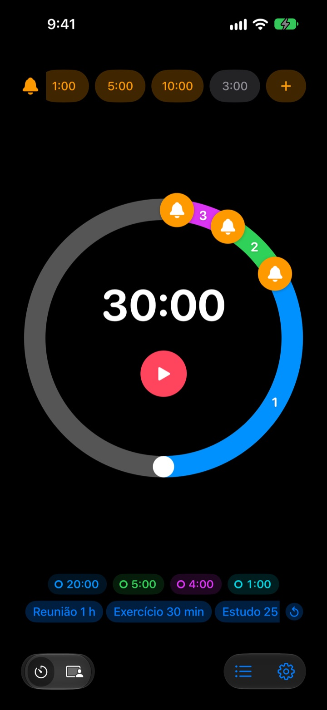
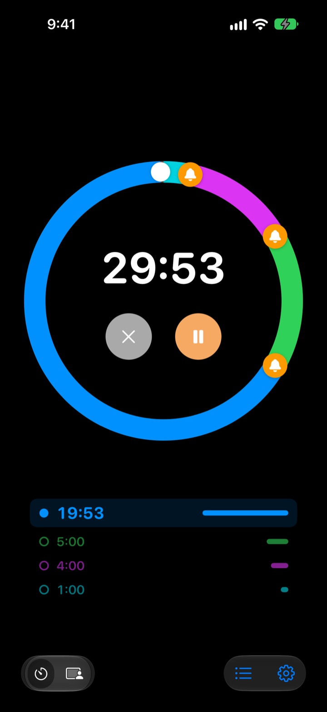
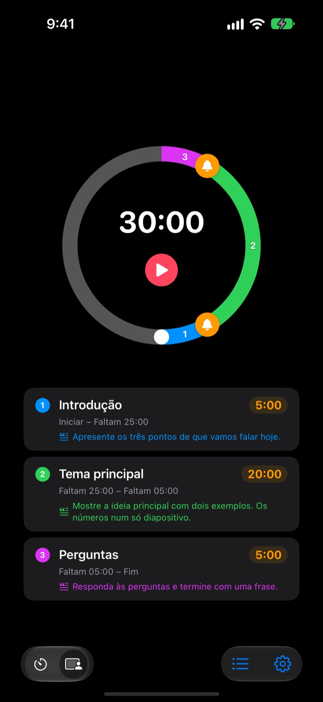
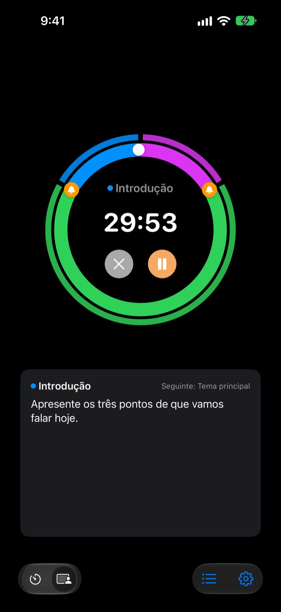

Não depois de acabar,
mas antes
5 minutos antes do fim da apresentação, 3 antes de fechar a reunião. O Rereminder avisa em cada momento que escolher, para não ter de estar sempre a olhar para o relógio.
Pré-alertas gratuitos e sem limite. Para iPhone, Apple Watch e Mac.

Experimente aqui
Escolha a duração e os alertas e carregue no botão vermelho. Um minuto passa num segundo e cada alerta toca na altura certa.
O temporizador já tocou quando era tarde demais?
Um temporizador comum só toca no zero. A apresentação acaba antes da conclusão, a aula termina sem resumo e a reunião invade a seguinte sem nada decidido. Não precisa de um sinal de que acabou, mas sim de um aviso enquanto ainda há tempo para fechar.
Avisos antes do fim, quantos quiser
Arraste os sinos do mostrador para 10, 5 ou 1 minuto antes do fim, ou para onde preferir. Não há limite e cada alerta pode ter a sua própria mensagem, como "Fechar os diapositivos".
Com o ecrã apagado, o tempo restante continua no ecrã bloqueado e na Dynamic Island, e o Apple Watch dá-lhe um toque no pulso.

Divida a apresentação em partes
Introdução 5 minutos, conteúdo 20, perguntas 5. Dê a cada parte um nome e um guião. Sempre que muda de parte, recebe um alerta com o nome dela, e o tempo de cada uma cumpre-se quase sozinho. (Pro)

O que dizer agora, no ecrã
Durante a sessão, o guião da parte atual e a seguinte aparecem em letra grande. Se passar do zero, continua a contar para saber quanto se excedeu. (Pro)

Comece em três passos
- 1
Defina o tempo
Rode o mostrador ou toque no tempo para o escrever. Uma volta são 60 minutos, duas voltas 120.
- 2
Coloque os alertas
Toque numa etiqueta como 1:00 ou 5:00 em cima, ou arraste um sino para o mostrador.
- 3
Inicie e esqueça
Bloqueie o iPhone. O iPhone e o Apple Watch avisam em cada momento que marcou.
As definições mais usadas
- Apresentação de 20 minutos
- 5 min antes "Passar à conclusão", 1 min antes "Agradecer"
- Aula de 50 minutos
- 10 min antes "Explicar os trabalhos de casa", 3 min antes "Resumir"
- Reunião de 30 minutos
- 5 min antes "Confirmar as decisões"
- Aula de pilates ou ioga
- Modo Sessão, uma parte por sequência (Pro)
- Estudo de 25 minutos
- 5 min antes e depois uma pausa
- Descanso de 3 minutos entre séries
- 30 s antes "Preparar a série seguinte"
- Mentoria de uma hora
- 15 e 5 min antes
Guarde como modelo o que repete e abra-o com um toque (a partir de Memória). Também pode iniciar ou parar um temporizador com Atalhos e Siri.
Os pré-alertas são gratuitos. Pague só se quiser que se lembre.
Grátis
- Pré-alertas sem limite
- A sua própria mensagem em cada alerta
- Atividade em direto no ecrã bloqueado e na Dynamic Island
- Alertar até eu responder e terminar com alarme completo
- App para Apple Watch e barra de menus do Mac
- Todas as cores de tema
Memória · Pro
- Memória: guarde definições como modelos e abra-as com um toque
- Memória: ao reabrir a app, fica tudo como deixou
- Pro: tudo o que a Memória tem, mais o Modo Sessão com nomes de partes e guiões
- Pro: tempo extra, histórico e estatísticas
Em cada plano, escolha assinatura anual ou uma compra única vitalícia. Pode experimentar o Modo Sessão, o tempo extra e o histórico algumas vezes antes de pagar.
Sem anúncios. E um passe para sempre abre todas as apps da Leeo.
Perguntas frequentes
Um alerta não tocou.
Quase sempre são permissões ou um modo de foco. Verifique a permissão de notificações na app, em Definições › Método de notificação. Se usa um modo de foco, adicione o Rereminder às apps permitidas em Definições › Foco do iOS. No modo silencioso só vibra. Se o Rereminder estiver em Definições › Notificações › Resumo agendado, os alertas ficam retidos; retire-o de lá.
Vou dar pelo fim no modo silencioso?
Sim. Ative "Terminar com alarme completo" e toca alto mesmo no modo silencioso ou com um modo de foco. Com "Alertar até eu responder", insiste até tocar em Parar ou Adiar na notificação.
O meu Apple Watch não sincroniza.
Abra Definições › Os meus dispositivos na app; aí vê o passo que falta. O relógio tem de estar emparelhado com este iPhone, o Rereminder tem de estar instalado no relógio e tem de o abrir uma vez no relógio depois de instalar. A partir daí, o temporizador passa para o relógio mesmo com a app fechada.
O meu Mac aparece como desligado.
"Ligado" significa que a app esteve aberta nesse Mac nos últimos 10 minutos, por isso um Mac que acabou de acordar aparece uns minutos depois. Os dois dispositivos precisam da mesma conta iCloud, com o iCloud Drive ativado. A app para Mac precisa do macOS 26 ou posterior.
Paguei, mas nada foi desbloqueado.
Toque em "Restaurar compras" no ecrã de planos, com a mesma conta Apple com que pagou. As compras vitalícias regressam mesmo depois de apagar a app ou mudar de dispositivo.
Os meus modelos guardados estão bloqueados.
Continuam lá. Sem Memória ou Pro ficam visíveis mas bloqueados, e voltam a abrir assim que comprar um dos dois.
Como peço um reembolso?
Os reembolsos são tratados pela Apple. Peça-o em reportaproblem.apple.com com a conta Apple usada no pagamento. Se algo não funcionava, diga-me também, para que a próxima pessoa não passe pelo mesmo.
Posso experimentar sem instalar?
Abra m1zz.github.io/rereminder no iPhone e o temporizador arranca logo como App Clip. O mostrador e os alertas estão lá. Os modelos, o Modo Sessão e a app do relógio estão na app completa.
Em que dispositivos funciona?
iPhone com iOS 26 ou posterior, Apple Watch com watchOS 11.6 ou posterior e Mac com macOS 26 ou posterior. O iPad ainda não é suportado. A app está disponível em 24 idiomas.
Onde ficam os meus dados?
Temporizadores, modelos, nomes de partes, guiões e histórico ficam no seu dispositivo e desaparecem se apagar a app. A app só envia estatísticas de utilização anónimas que ajudam a melhorá-la. A política de privacidade indica exatamente quais.
Dúvidas ou sugestões? Escreva para leeo@kakao.com. Costumo responder em 2 a 3 dias.